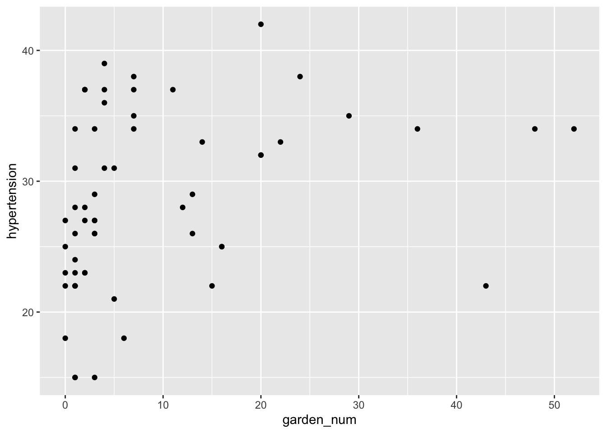
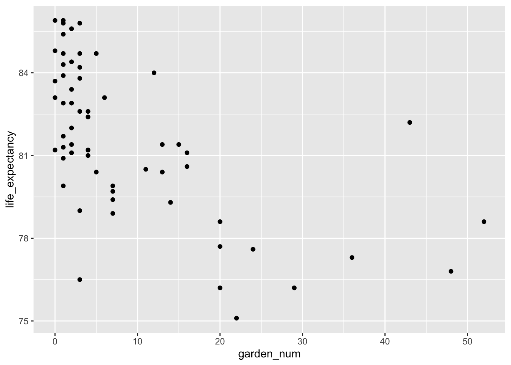
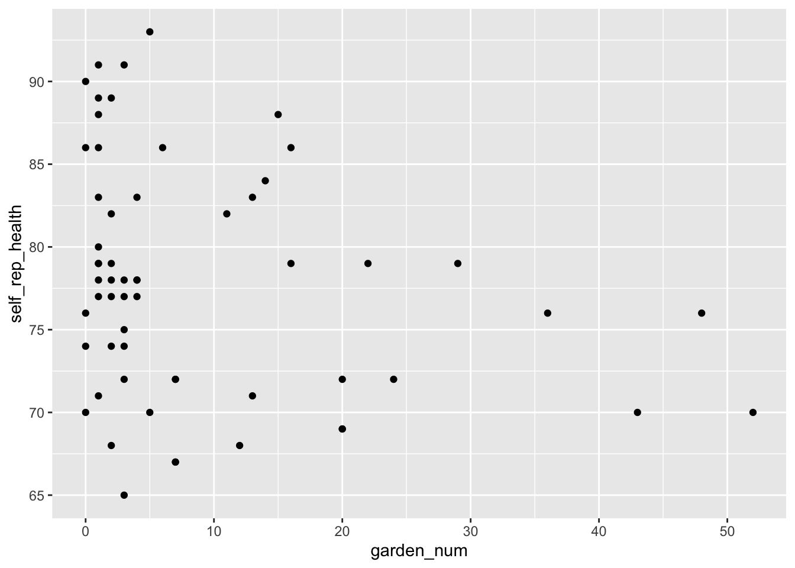
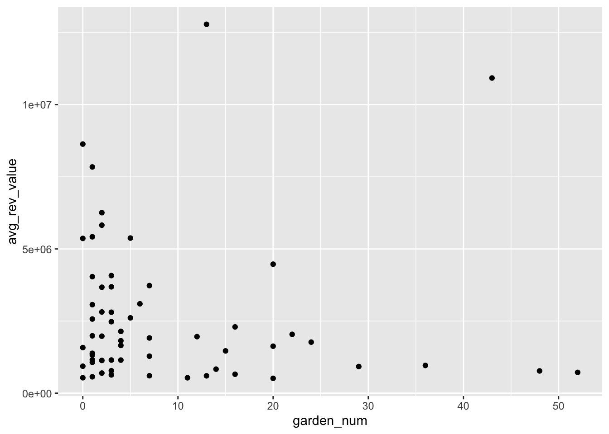
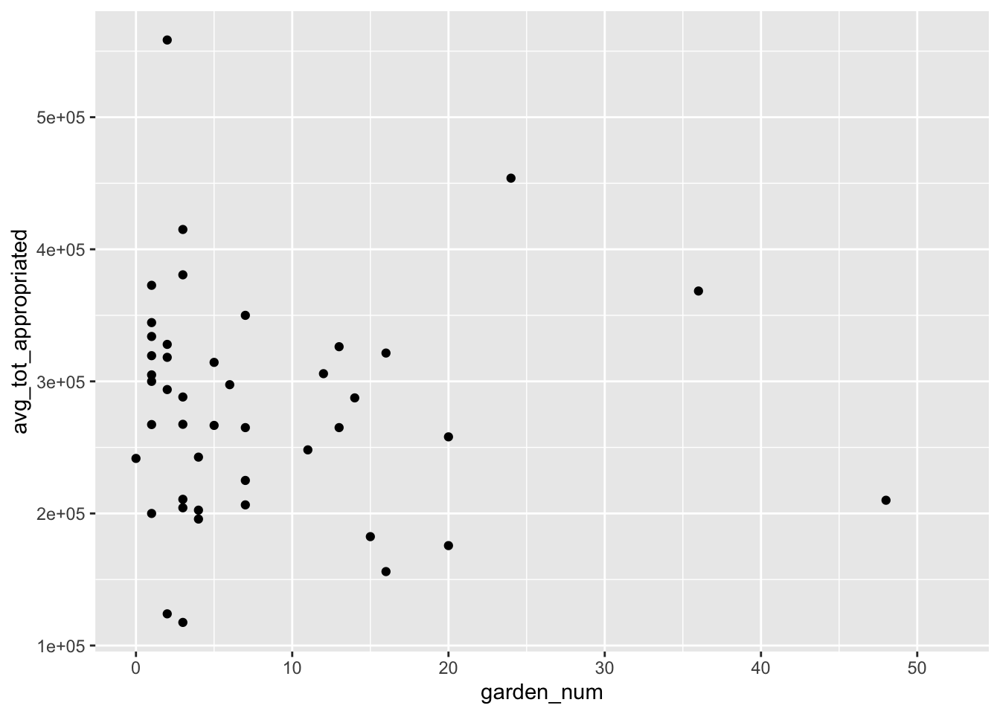
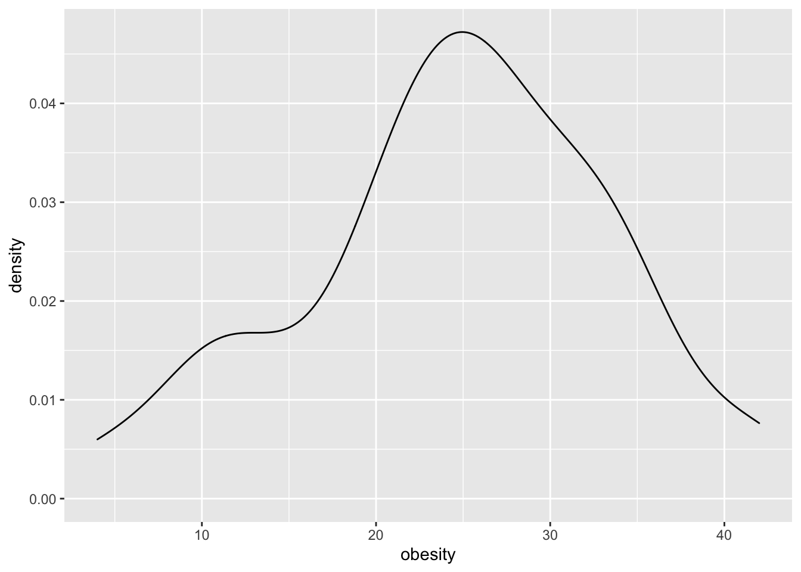
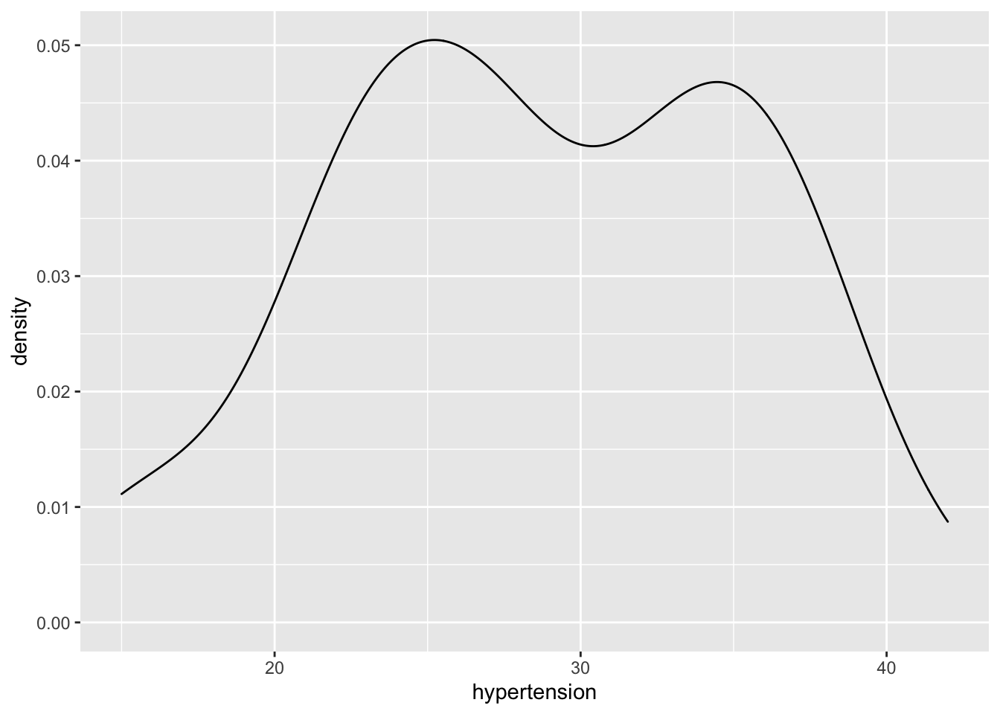
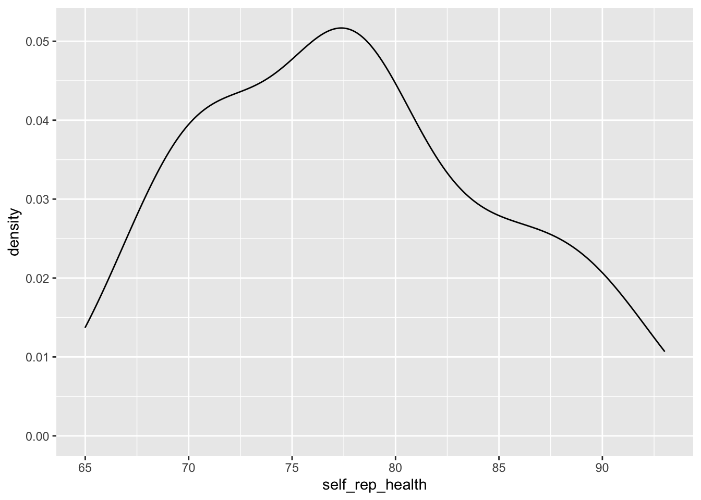

library(tidyverse)## ── Attaching packages ────────────────── tidyverse 1.3.0 ──## ✓ ggplot2 3.3.2 ✓ purrr 0.3.4
## ✓ tibble 3.0.3 ✓ dplyr 1.0.2
## ✓ tidyr 1.1.2 ✓ stringr 1.4.0
## ✓ readr 1.3.1 ✓ forcats 0.5.0## ── Conflicts ───────────────────── tidyverse_conflicts() ──
## x dplyr::filter() masks stats::filter()
## x dplyr::lag() masks stats::lag()library(sandwich)
library(spdep)## Loading required package: sp## Loading required package: spData## To access larger datasets in this package, install the spDataLarge
## package with: `install.packages('spDataLarge',
## repos='https://nowosad.github.io/drat/', type='source')`## Loading required package: sf## Linking to GEOS 3.8.1, GDAL 3.1.1, PROJ 6.3.1library(maptools)## Checking rgeos availability: FALSE
## Note: when rgeos is not available, polygon geometry computations in maptools depend on gpclib,
## which has a restricted licence. It is disabled by default;
## to enable gpclib, type gpclibPermit()library(rgdal)## rgdal: version: 1.5-18, (SVN revision 1082)
## Geospatial Data Abstraction Library extensions to R successfully loaded
## Loaded GDAL runtime: GDAL 3.1.1, released 2020/06/22
## Path to GDAL shared files: /Library/Frameworks/R.framework/Versions/4.0/Resources/library/rgdal/gdal
## GDAL binary built with GEOS: TRUE
## Loaded PROJ runtime: Rel. 6.3.1, February 10th, 2020, [PJ_VERSION: 631]
## Path to PROJ shared files: /Library/Frameworks/R.framework/Versions/4.0/Resources/library/rgdal/proj
## Linking to sp version:1.4-4
## To mute warnings of possible GDAL/OSR exportToProj4() degradation,
## use options("rgdal_show_exportToProj4_warnings"="none") before loading rgdal.library(spatialreg)## Loading required package: Matrix##
## Attaching package: 'Matrix'## The following objects are masked from 'package:tidyr':
##
## expand, pack, unpack## Registered S3 methods overwritten by 'spatialreg':
## method from
## residuals.stsls spdep
## deviance.stsls spdep
## coef.stsls spdep
## print.stsls spdep
## summary.stsls spdep
## print.summary.stsls spdep
## residuals.gmsar spdep
## deviance.gmsar spdep
## coef.gmsar spdep
## fitted.gmsar spdep
## print.gmsar spdep
## summary.gmsar spdep
## print.summary.gmsar spdep
## print.lagmess spdep
## summary.lagmess spdep
## print.summary.lagmess spdep
## residuals.lagmess spdep
## deviance.lagmess spdep
## coef.lagmess spdep
## fitted.lagmess spdep
## logLik.lagmess spdep
## fitted.SFResult spdep
## print.SFResult spdep
## fitted.ME_res spdep
## print.ME_res spdep
## print.lagImpact spdep
## plot.lagImpact spdep
## summary.lagImpact spdep
## HPDinterval.lagImpact spdep
## print.summary.lagImpact spdep
## print.sarlm spdep
## summary.sarlm spdep
## residuals.sarlm spdep
## deviance.sarlm spdep
## coef.sarlm spdep
## vcov.sarlm spdep
## fitted.sarlm spdep
## logLik.sarlm spdep
## anova.sarlm spdep
## predict.sarlm spdep
## print.summary.sarlm spdep
## print.sarlm.pred spdep
## as.data.frame.sarlm.pred spdep
## residuals.spautolm spdep
## deviance.spautolm spdep
## coef.spautolm spdep
## fitted.spautolm spdep
## print.spautolm spdep
## summary.spautolm spdep
## logLik.spautolm spdep
## print.summary.spautolm spdep
## print.WXImpact spdep
## summary.WXImpact spdep
## print.summary.WXImpact spdep
## predict.SLX spdep##
## Attaching package: 'spatialreg'## The following objects are masked from 'package:spdep':
##
## anova.sarlm, as_dgRMatrix_listw, as_dsCMatrix_I, as_dsCMatrix_IrW,
## as_dsTMatrix_listw, as.spam.listw, bptest.sarlm, can.be.simmed,
## cheb_setup, coef.gmsar, coef.sarlm, coef.spautolm, coef.stsls,
## create_WX, deviance.gmsar, deviance.sarlm, deviance.spautolm,
## deviance.stsls, do_ldet, eigen_pre_setup, eigen_setup, eigenw,
## errorsarlm, fitted.gmsar, fitted.ME_res, fitted.sarlm,
## fitted.SFResult, fitted.spautolm, get.ClusterOption,
## get.coresOption, get.mcOption, get.VerboseOption,
## get.ZeroPolicyOption, GMargminImage, GMerrorsar, griffith_sone,
## gstsls, Hausman.test, HPDinterval.lagImpact, impacts, intImpacts,
## Jacobian_W, jacobianSetup, l_max, lagmess, lagsarlm, lextrB,
## lextrS, lextrW, lmSLX, logLik.sarlm, logLik.spautolm, LR.sarlm,
## LR1.sarlm, LR1.spautolm, LU_prepermutate_setup, LU_setup,
## Matrix_J_setup, Matrix_setup, mcdet_setup, MCMCsamp, ME, mom_calc,
## mom_calc_int2, moments_setup, powerWeights, predict.sarlm,
## predict.SLX, print.gmsar, print.ME_res, print.sarlm,
## print.sarlm.pred, print.SFResult, print.spautolm, print.stsls,
## print.summary.gmsar, print.summary.sarlm, print.summary.spautolm,
## print.summary.stsls, residuals.gmsar, residuals.sarlm,
## residuals.spautolm, residuals.stsls, sacsarlm, SE_classic_setup,
## SE_interp_setup, SE_whichMin_setup, set.ClusterOption,
## set.coresOption, set.mcOption, set.VerboseOption,
## set.ZeroPolicyOption, similar.listw, spam_setup, spam_update_setup,
## SpatialFiltering, spautolm, spBreg_err, spBreg_lag, spBreg_sac,
## stsls, subgraph_eigenw, summary.gmsar, summary.sarlm,
## summary.spautolm, summary.stsls, trW, vcov.sarlm, Wald1.sarlmLoad data and select variables. Had to remove one community garden that didn’t have any neighbors because was getting error when running the spatial regression.
Check linearity of predictor with outcome Poverty, obesity, hypertension, life expectancy, and self-reported health are generally linearly associated with log of garden number. Transformed to log to see linear relationship but with assumed normal error and constant variance.
analysis_data_final %>%
ggplot(aes(x = garden_num, y = poverty)) +
geom_point()analysis_data_final %>%
ggplot(aes(x = garden_num, y = obesity)) +
geom_point()analysis_data_final %>%
ggplot(aes(x = garden_num, y = hypertension)) +
geom_point()
analysis_data_final %>%
ggplot(aes(x = garden_num, y = life_expectancy)) +
geom_point()
analysis_data_final %>%
ggplot(aes(x = garden_num, y = self_rep_health)) +
geom_point()
analysis_data_final %>%
ggplot(aes(x = garden_num, y = avg_rev_value)) +
geom_point()
analysis_data_final %>%
ggplot(aes(x = garden_num, y = avg_tot_appropriated)) +
geom_point()## Warning: Removed 15 rows containing missing values (geom_point).
Check normal ish distribution of outcome - poverty, obesity, life expectancy, self-rep health I think ok to use because generally normal distribution. Hypertension is bimodal.
analysis_data_final %>%
ggplot(aes(x = poverty)) +
geom_density()analysis_data_final %>%
ggplot(aes(x = obesity)) +
geom_density()
analysis_data_final %>%
ggplot(aes(x = hypertension)) +
geom_density()
analysis_data_final %>%
ggplot(aes(x = life_expectancy)) +
geom_density()analysis_data_final %>%
ggplot(aes(x = self_rep_health)) +
geom_density()
Pick theoretical predictors: poverty as confounder, obesity and life expectancy as outcomes.
Check spatial dependence (non-random distribution) of variables using Moran’s I. All have significant Moran’s I indicating spatial dependence which we should include in our model.
###Create a queen's neighborhood weight matrix using the poly2nb command.
analysis_nbq <- poly2nb(analysis_data_spatial)
###extract coordinates to plot the connectivity matrix for visualization.
coords <- coordinates(analysis_data_spatial)
###convert the neighborhood matrix into a list so that the connections between counties can be used in Moran's I test.
analysis_nbq_w <- nb2listw(analysis_nbq)
###Garden number
###Convert Exposure variable to z-form and then create the lag of that variable.
analysis_data_spatial@data$log_garden_num <- scale(analysis_data_spatial@data$log_garden_num)
analysis_data_spatial@data$lag_sQL <- lag.listw(analysis_nbq_w,analysis_data_spatial@data$log_garden_num)
### Lose spatial properties when we turn into data frame for analysis
analysis_sp_data <- as.data.frame(analysis_data_spatial)
###Run morans I test and plot the results.
moran.test(analysis_data_spatial@data$log_garden_num, listw = analysis_nbq_w, zero.policy = TRUE)
moran.plot(as.vector(analysis_data_spatial@data$log_garden_num), listw = analysis_nbq_w,
xlim = c(-2,4),ylim = c(-2,2),
main = "Moran's I = 0.1899, p-value = 0.0138",
xlab = "Garden Number", ylab = "Spatial Lag Number of Gardens", pch = 19)
###Poverty
###Convert Exposure variable to z-form and then create the lag of that variable.
analysis_data_spatial@data$poverty <- scale(analysis_data_spatial@data$poverty)
analysis_data_spatial@data$lag_sQL_p <- lag.listw(analysis_nbq_w,analysis_data_spatial@data$poverty)
### Lose spatial properties when we turn into data frame for analysis
analysis_sp_data <- as.data.frame(analysis_data_spatial)
###Run morans I test and plot the results.
moran.test(analysis_data_spatial@data$poverty, listw = analysis_nbq_w, zero.policy = TRUE)
moran.plot(as.vector(analysis_data_spatial@data$poverty), listw = analysis_nbq_w,
xlim = c(-2,4),ylim = c(-2,2),
main = "Moran's I = 0.4787, p-value < 0.0001",
xlab = "Poverty", ylab = "Spatial Lag Poverty", pch = 19)
###Obesity
###Convert outcome variable to z-form and then create the lag of that variable.
analysis_data_spatial@data$obesity <- scale(analysis_data_spatial@data$obesity)
analysis_data_spatial@data$lag_sQL_o <- lag.listw(analysis_nbq_w,analysis_data_spatial@data$obesity)
### Lose spatial properties when we turn into data frame for analysis
analysis_sp_data <- as.data.frame(analysis_data_spatial)
###Run morans I test and plot the results.
moran.test(analysis_data_spatial@data$obesity, listw = analysis_nbq_w, zero.policy = TRUE)
moran.plot(as.vector(analysis_data_spatial@data$obesity), listw = analysis_nbq_w,
xlim = c(-2,4),ylim = c(-2,2),
main = "Moran's I = 0.7075, p-value < 0.0001",
xlab = "Obesity", ylab = "Spatial Lag Obesity", pch = 19)
###Life Expectancy
###Convert outcome variable to z-form and then create the lag of that variable.
analysis_data_spatial@data$life_expectancy <- scale(analysis_data_spatial@data$life_expectancy)
analysis_data_spatial@data$lag_sQL_l <- lag.listw(analysis_nbq_w,analysis_data_spatial@data$life_expectancy)
### Lose spatial properties when we turn into data frame for analysis
analysis_sp_data <- as.data.frame(analysis_data_spatial)
###Run morans I test and plot the results.
moran.test(analysis_data_spatial@data$life_expectancy, listw = analysis_nbq_w, zero.policy = TRUE)
moran.plot(as.vector(analysis_data_spatial@data$life_expectancy), listw = analysis_nbq_w,
xlim = c(-2,4),ylim = c(-2,2),
main = "Moran's I = 0.5354, p-value < 0.0001",
xlab = "Life Expectancy", ylab = "Spatial Lag Life Expectancy", pch = 19)Fit Preliminary Models: 1. Life expectancy = log(garden_num) + poverty 2. Obesity = log(garden_num) + poverty
Test baseline linear models and do spatial diagnostics to choose appropriate spatial model. Need to confirm which exact spatial model to use, and whether any spatial related assumptions violated.
###Test baseline linear model.
obesity_lm <- lm(obesity ~ garden_num + poverty, data = analysis_data_spatial)
summary(obesity_lm)
life_expectancy_lm <- lm(life_expectancy ~ log(garden_num) + poverty, data = analysis_data_spatial)
summary(life_expectancy_lm)
###Run Langrane Multiplier tests to identify the type of spatial regression model to run.
obesity.lagrange <- lm.LMtests(obesity_lm, analysis_nbq_w, test = c("LMerr","RLMerr","LMlag","RLMlag","SARMA"))
print(obesity.lagrange)
life_expectancy.lagrange <- lm.LMtests(life_expectancy_lm,analysis_nbq_w, test = c("LMerr","RLMerr","LMlag","RLMlag","SARMA"))
print(life_expectancy.lagrange)
### GLOBAL MODELS ###
###Specify Spatial Lag Model
htn.lag <- spatialreg::lagsarlm(hypertension ~ garden_num + poverty, data = analysis_data_spatial, health_nbq_w, tol.solve = 1.0e-15)
###Spatial error model
htn.err <- spatialreg::errorsarlm(hypertension ~ garden_num + poverty, data = analysis_data_spatial, health_nbq_w, tol.solve = 1.0e-15)
###Mixed model (SARMA significant)
htn.sar <- spatialreg::lagsarlm(hypertension ~ garden_num + poverty, data = analysis_data_spatial, health_nbq_w, type = "mixed", tol.solve = 1.0e-15)
summary(htn.lag)
summary(htn.err)
summary(htn.sar)Issues: All of our outcomes are not really linear with garden_num. They are more linear with log(garden_num), but when we do that there are a bunch of errors with the locations that have zero gardens, because log(0) is not a real number. But when I remove the districts with no gardens there are other errors because then not all the districts tough each other, which is necessary for the spatial model. Thoughts?
Check spatial diagnostics & regular diagnostics of our models: -check residuals - normally distributed
- equal variance
- not spatially correlated
-check r^2 for model fit - Could make 2 model options & do cross validation, but not sure if possible b/c only have poverty as a possible confounder, none of the other variables make much sense.
Model output to visualize: - Table of betas and se - plot the actual linear model over data points